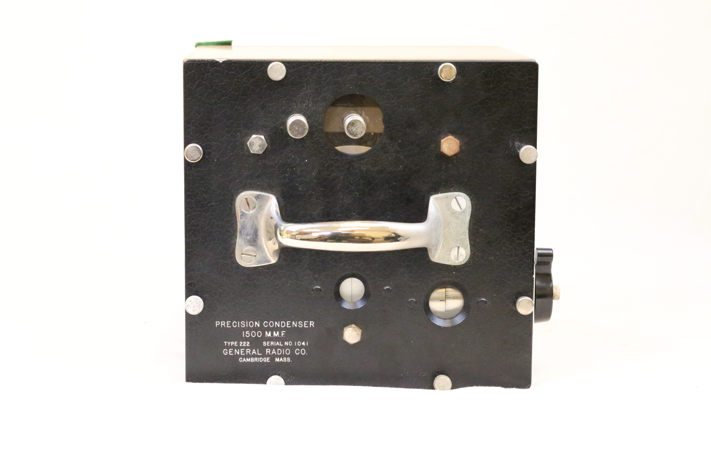

The precision condenser is housed in a brown wooden case equipped with a metal handle and lockable latch for secure transport. The main unit is a square box featuring a wooden base and a top panel made of black hard plastic or Bakelite, fastened to the base with eleven screw bolts. On the top panel are two connection terminals and three transparent viewing windows that reveal internal measurement readings. The panel also displays essential identification details, including the device name, type, serial number, and manufacturer information. An adjustable plastic knob is mounted on one side of the box, ergonomically designed to be operated with a single finger. To provide stability for the relatively heavy unit, plastic feet are positioned on each corner of the base. A laminated data sheet containing measurement tables is included separately within the packaging box.
(outside look)

This precision condenser is an historic laboratory-grade variable capacitor recognized for its 0.1% or better accuracy. The materials used to make it ensure a durable and stable construction, explaining its compact structure despite being almost a century old ( the manufacture of such equipment ceased between 1928 and 1930). It is engineered meticulously for temperature stability, mechanical robustness and readability. Back in the 20th century, it was a legacy choice in calibration labs. The plates inside are sufficiently rigid and well placed to ensure handling of the condenser will not cause any change in capacitance.
(inside look)
Physical Make
Materials:
Plates of heavy aluminium (widely separated by accurately turned spacers and firmly clamped between substantial cast metal end-plates).
A steel shaft carrying the rotating plates which turn in cone-shaped bronze bearings.
Rotary plates are turned by a worm and a gear, permitting fine control.
The worm is held by spring tension in position against the gear to prevent backlash.
The worm is lapped in to ensure a perfect fit.
Stator plate assembly is insulated from rigid end-plates by isulantite blocks.
Small metal blocks placed in weak, non-varying electrostatic field with a very low power factor.
The top panel is a ¼ inch aluminium plate; finished in permanent crystalline black.
The top case is of polished walnut and lined with a copper shield.
Glass windows at the top allow the scale to be read whilst keeping off dust.
A hard rubber rotating handle extends into the box and engages the worm shaft.
The carrying handle and other metal parts are finished in polished nickel.
A whitewood carrying case is provided with a lock and carrying handle.
Dimensions: (8.25 X 8.75 X 9.00) inches or (21 x 22 x 23) centimeters
Weight = 16lbs
Market Value = $80.00
Markings
The top panel has information about the instrument and the manufacturer, and the side has ‘C5’ engraved on it.
Measurements: The main shaft has a scale divided into 25 parts, and the worm shaft has a second scale with 100 divisions around its circumference. One full turn of the worm shaft shifts the main scale by one division, allowing readings accurate to 1 in 2500, or 0.6 MMF. A reference chart provided with the condenser lists measurements with an accuracy of 1 MMF (magnetomotive force = number of coils × current in amperes).
Manufacturer mark: Precision Condenser; 1500 MMF; Type 222; Serial No. 1041; General Radio Company; Cambridge Mass.
Functionality and Applications
This General Radion Precision Condenser functions as a tunable capacitor, allowing for precise control over the amount of electric charge the circuit can store. By adjusting the knob, the position of the movable plates change relative to the fixed plates. As a result, the capacitance changes according to the desire of the user. This change in capacitance directly affects the resonant frequency of circuits, making them useful in applications like radio tuning, signal filtering and frequency matching. Air is used as the dielectric, therefore offering very low energy loss and high stability thus making it ideal for high frequency work and lab experiments. The design of this condenser ensures smooth adjustments that are not only accurate but also repeatable for fine-tuning electrical signals without introducing noise or instability into the system.
(video: turning the knob changes the overlap which alters capacitance)
For engineers and educational labs, the precision condenser is used to experiment with waveforms, signal filtering and circuit behaviour by taking advantage of the high precision and low-loss air dielectric. To test its variability and precision, we measured its capacitance while turning the knob. As seen in the video, the capacitance changes with the turning. Therefore implying that a connection through an LC circuit can form an observable and changing square wave in the oscilloscope.
(video: fluke meter showing how precise the capacitance changes with a turn of the knob)
Capacitance Physics
Capacitance is the ability of a system to store electric charge when a voltage is applied. It is a fundamental property of a capacitor defined by the formula ;
C = εA / d
Where:
C is the capacitance, measured in farads (F)
ε (epsilon) is the permittivity of the dielectric material between the plates
A is the area of overlap between the two conductive plates
d is the distance between the plates
This 239J variable condenser is a rotary air dielectric capacitor, it uses air as the dielectric and changes capacitance by rotating a set of metal plates. As the rotor turns, the amount of overlap with the stator changes. The more the overlap, the greater the area A, the higher the capacitance, the lesser the area A, the lower the capacitance. This change in capacitance directly affects the resonant frequency f of a circuit, which is given by the formula:
f = 1 / (2π√(LC))
Where:
f is the resonant frequency (in hertz), at which the circuit naturally oscillates
L is the inductance of the coil in the circuit (in henries, H)
C is the capacitance (in farads, F), controlled by the condenser
π is the mathematical constant pi (≈ 3.142)
Therefore, by turning the knob, you are able to tune the circuit into different frequencies which becomes critical for selecting radio stations. The air is used as the dielectric because it does not absorb energy like solids do meaning it has a low loss, it keeps the capacitance linear and stable, which is important for tuning, and it prevents thermal drift, meaning the capacitance doesn’t change much with temperature.
/h2>
Manufacturer's Information
General Radio Companywas founded on June 14, 1915 by Melville Eastham in Cambridge Massachusetts. The company's aim was to manufacture instruments and parts for precision measuring, especially those involved with receiving and transmitting signals. Among the early products manufactured by the company were: variable capacitors, spark gaps, crystal detectors, radio components and variable inductors. The company expanded and enriched its relevance during the first world war, as it manufactured needed equipment such as the portable wave meters, thus securing major contracts from telecommunication companies such as AT&T and the National Bureau of Standards. Notably, it built a synchronous rectifier to support AT&T in transatlantic communications during the first world war. Later on, the company grew and expanded due to the booming radio era, as its precision tools for signal transmission became more relevant.
Reflection From The Present
The modern versions of air capacitors come in smaller, lighter packages, and uses plastics and ceramics as dielectrics. These modern capacitors often use digital and electronic fine tunings. They are compact, faster and easy to automate. Compared to the old variable air condenser which provide smoother manual and analog controls. Though the use of plastics and ceramics as dielectric material provide more capacitance in smaller spaces, it often suffers from temperature drift and higher energy loss, which the traditional air condenser would have been resilient against. Modern capacitors are designed specifically to be used within modern technology in telecommunication, smartphones and radios, unlike the older ones which were primarily focused on analog radio tuning and lab experiments. This 239J variable air condenser